[ 2026.09.08. ~ 2026.09.27. ]
(9월 8일 기준) 군 입대가 약 한 달 정도 남았습니다.
ㅜㅠㅠㅠㅠㅠㅠㅠㅠㅠㅠㅠㅠㅠㅠㅠㅠㅠㅠㅠㅠㅠㅠㅠㅠㅠ
입대를 하기 전, 지금까지 구상한 것들을 바탕으로
구체적인 모습을 보고자 프리비즈를 만들어 봤습니다.
이렇게 하면 입대하고도 구상하기 편할 것 아닙니까.
이야 좋다.
이요와 - 덮어쓰기
원래 프리비즈는 덮어쓰기가 아닌,
열이상으로 만들어질 예정이었습니다.
감명 깊게 봤던 영상이 이 영상이었거든요.
열이상 / 랄세이 UTAU cover
그러던 중 지인분께 덮어쓰기라는 곡을 소개 받았는데,
스토리가 이미 있는 곡이었어서 몰입이 잘 되더라고요.
그래서 이 곡을 선택 했습니다!
이요와 - 덮어쓰기(스토리ver)
여자아이가 남자아이에게
자신이 좋아하는 곡을 피아노로 친
녹음본을 들려주며 영상이 시작됩니다.
여자아이는 이 노래가
언제까지 갈 지 모른다며,
배터리 문제냐는 남자아이의 질문에
아니라는 답을 주면서 이 노래는
16년 후의 노래임을 밝힙니다.
사실 16년 후의 미래에서는
양손으로 들 수 있을 정도의 물체를
과거로 덮어쓰기 할 수 있는 기술을 찾아냈는데,
이를 이용해 여자아이는
본인의 뇌를 과거로 덮어쓰기해서
시간여행을 했던 겁니다.
허나 여자아이는 미래를 바꾸려
이것저것 시도해 봤지만 복권에 당첨돼도
돈을 받지 못했고 미래를 예언해도
방송이 되지 않는 등 바꿀 수 없었습니다.
그렇기에 더 초조할 뿐이었습니다.
시간이 흘러 시간에 맞게 버스 한 대가 도착해
정류장에 멈춰섭니다.
남자아이가 탈 버스이자
뇌를 덮어쓰기까지라도해서
16년 전 과거에 도착한 이유인 그 버스는
도착지에 도착하지 못하고 사고가 날 예정입니다.
하지만 역시 과거는 바뀌지 않기에,
남자 아이는 버스에 탑승했고 버스는 도착지로 향합니다.
여자 아이 또한 과거에 있던 존재가 아니기 때문에,
그대로 쭉 무한 루프에 갇히게 되며 이야기는 마무리됩니다.
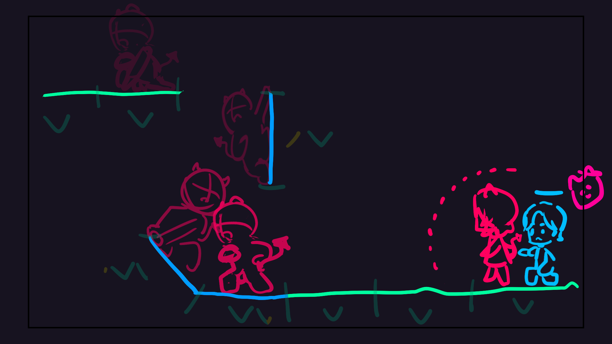
초기 구상
처음엔 바닥이 움직이는 게 아니라 방향키를 사용해,
박자에 맞춰서 움직이는 방식으로 만들려 했습니다.
그런데 무에서 유를 창조하려는 거다 보니
뭐부터 시작해야 될 지 머리가 아프더라고요.
지금이라면 만들 수 있을텐데 말이죠...
그래서 프리비즈는 캐릭터가 가만히 있고
바닥이 움직이는 형태로 만들었습니다.
그럼 캐릭터한테는 동작만 만들고 반복한 뒤
바닥만 움직이면 되거든요.
저 방식은 맵 이동(겸 튜토리얼) 할 때랑
규칙이 바뀐 인게임에서 사용될 예정이에요.
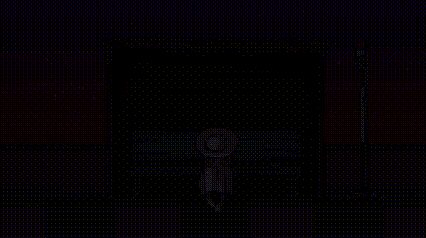
상호작용
상호작용은 캐릭터에게 가까이 가면 노란색으로 나타납니다.
캐릭터 위에 요구하는 키를 누르면 상호작용이 되며,
캐릭터와 대화를 할 수 있습니다.
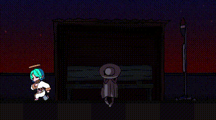
특수 상호작용
특수 상호작용은 상호작용과 달리 보라색으로 나타납니다.
마찬가지로 위에 요구하는 키를 누르면 상호작용이 되며,
캐릭터와 대화를 하거나 인게임을 진행 할 수 있습니다.
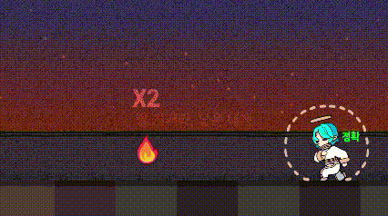
가열
가열은 BPM이 변하는 기믹입니다.
가열이 되면 바닥이 빨갛게 변하고 BPM이 2배가 되는데,
가열 전에 앞에 두 바닥이 빨간색으로 은은히 표시됩니다.
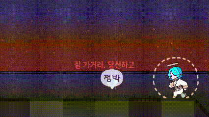
냉각
냉각은 마찬가지로 BPM이 변하는 기믹입니다.
냉각이 되면 바닥이 파랗게 변하고 BPM이 1/2배가 되는데,
냉각 전에 앞에 두 바닥이 파란색으로 은은히 표시됩니다.
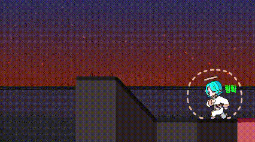
위험 표시
위험 표시는 갑작스러운 공격이 나타날 떄 삐비비빅하고 알려주는 기믹입니다.
여기서는 몬스터 하나가 나오고 배경에 커맨드가 뜨는데,
그 커맨드대로 박자를 맞추면 되는 방식으로 짜봤습니다.
사실 저거 어케 짜야될 지 명확하게 못 정했었습니다.
그래서 일단 저렇게 만들어 본 건데 ㅎㅋㅋ...
아마 다음에 더 좋은 기믹 생각나면 바뀌지 않을까 싶습니다.
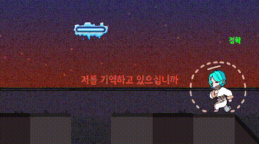
급속 재조정 장치(냉각)
급속 재조정 장치는 박자를 쪼개기 위한 기믹입니다.
이것 또한 어케 짜야될 지 명확하게 못 정해서
일단 생각나는 대로 짠 거긴 한데, 가열이랑 냉각으로
나눠서 언제 쪼개야 할 지 알려주면 좋겠다 하고 짜봤습니다.
물론 이것도 급조한 거라 다음에 더 좋은 기믹 생각나면
바꾸지 않을까 싶습니다.
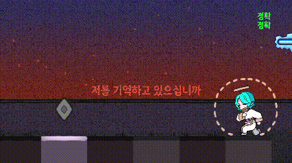
체크 포인트
체크 포인트는 인게임 진행 중 체력이 떨어져 죽을 시,
그 구간에서 부활할 수 있는 기믹입니다.
상황에 따라 체크 포인트를 없애거나,
특별한 효과를 넣어보고 싶은데, 아직 생각이 안납니다.
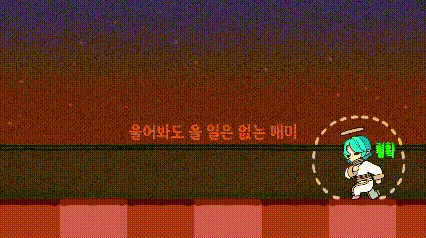
쉼 다리
쉼 다리는 한 박자를 쉬는 기믹입니다.
원래는 바닥과 벽을 이어서 반 박자를 만들기 위해
만들었던 기믹이었는데, 더이상 쓸모 없게 되자 버려졌다가
이렇게 재탄생하게 된 친구입니다.
몬스터 공격1
공격/빙어 패턴도 있습니다.
캐릭터 주위에 있는 판정선에 닿는 그 순간,
박자에 맞춰서 버튼을 누르기만 하면 됩니다.
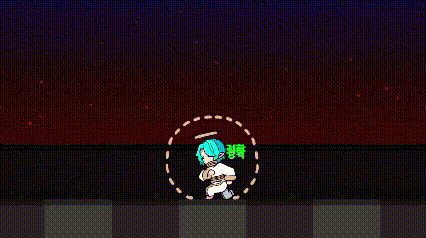
몬스터 공격2
물론 바닥이 같이 움직일 때도 있습니다.
이럴 땐 두 개의 키를 동시에 누르면 되는데,
바닥에 닿아있는 캐릭터와, 그렇지 않은 캐릭터가 있을 땐
꽤나 많이 복잡해질 겁니다!
그 떈 왼쪽 따로, 오른쪽 따로 일 거거든요.
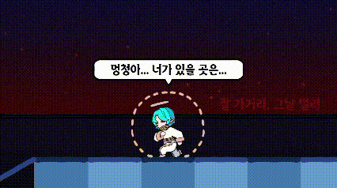
인게임 씬1
인게임 씬도 많이 생각하며 만들어봤습니다.
질질 끄는 장면이다보니 심심하지 않게 하기 위해
어두컴컴하지만 잔잔하게 흘러가는 배경을 넣어줬고,
캐릭터가 고심하는 거에 초점을 맞출 수 있도록 했습니다.
또한 왼쪽으로 이동하면서 마지막에 나타날 유키를
처음엔 눈치 못 채게 하고 싶었는데,
그래서 처음에 나오는 자막을 오른쪽에 둬서
왼쪽에서 나올 캐릭터를 못 보게 했고,
그 다음 자막을 왼쪽에 뒀습니다.
잘 표현 됐으려나 모르겠는데
됐다면 좋은 거 아니겠습니까.
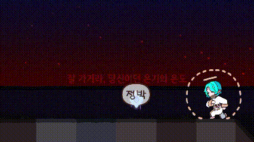
인게임 씬2
이 부분은 쉬는 구간이라 자칫 시시하게 느껴질 듯해서
별자리로 손을 뻗는 느낌을 내 봤습니다.
이건 스파이더맨2에서 거미줄로 여친 구할 때, 거미줄 모양이
손을 뻗는 듯한 연출을 한 걸 보고 영감을 받았습니다.
원래는 진짜로 별자리 모양 참고해서 만들어 보려했는데
아쉽게도 과학을 포기한 멋쟁이인지라 잘 안 되더라고요 ㅎ...
그래도 어찌저찌 표현해보려고 노력해봤습니다.
【 Dezel 】이요와 - 덮어쓰기 √ Previs
그렇게 해서 프리비즈가 완성됐습니다!
무에서 유를 창조하려니 막히는 부분들이 꽤 있었는데,
그래도 어찌어찌 뿌리를 만든 것 같습니다.
앞으로는 프리비즈를 기반으로 진행이라던가 기믹들을 짜서,
여기에 살을 추가해 줄 생각입니다.
해보죠!